ESG 공공디자인 3 — 협력을 통한 디자인
ESG 공공디자인 – 3. 협력을 통한 디자인
ESG Public Design : Governance by Public Design
Ⅰ. 협력을 통한 문제해결
거버넌스(Governance)는 다양한 사회의 문제를 해결하는 방법,
즉, 일반적인 의미의 사회적 조정이다.
-Janet Newman-
2000년, UN은 새천년 정상회의(Millennium Summit)’를 통해 189개국 정상들이 ‘밀레니엄 개발목표(MDGs)’를 공동 채택했다. 빈곤 감소, 질병 예방, 교육 확대, 성평등 증진 등 8가지 목표를 설정하며, 각국 정부는 공공 정책과 국제 원조를 통해 시민사회, 기업, 국제기구와 협력해 보건, 교육, 기아 해소 프로젝트를 추진했다. 그러나 MDGs는 개발도상국 문제에 집중해 선진국 및 복합 문제해결에는 한계가 있었다.
2015년, UN은 ‘지속가능발전 정상회의(Sustainable Development Summit)’에서 ‘2030 지속가능발전 의제(SDGs)’를 발표했다. 17개 목표와 169개 세부 목표로 구성된 SDGs는 모든 국가가 직면한 복합 문제해결을 목표로 하며, 빈곤 종식, 기아 해소, 기후 변화 대응 등 다양한 과제를 포괄했다.
SDGs의 핵심 중 하나는 국가 주도의 협력적 거버넌스(Participatory Governance)이다. 각국 정부 UN, 시민사회(NGO), 기업, 학계 등과 파트너십을 구축해 경제 성장, 사회 발전, 환경 보호를 균형 있게 추진하며, 지속 가능한 미래를 위한 글로벌 협력 체계를 강화하고 있다.
이처럼 지속가능한 사회를 위해 세상이 당면한 문제를 단편적으로 해결하는 방식이 아닌 협력을 통해 문제를 해결하고자 하는 방식으로 진화하고 있다.
Ⅱ. 함께 만들어가는 공공디자인
1. 수퍼킬렌(Superkilen)-다양한 문화를 이어주는 거버넌스
"우리는 최대한의 표현 자유를 향한 디자인 전략으로 시민의 참여를 제안했습니다. 우리는 사람들을 위한 공원을 큐레이팅했습니다. Peer-to-Peer 디자인이 문자 그대로 구현되었습니다."
Bjarke Ingels - BIG 창립자 겸 크리에이티브 디렉터
수퍼킬렌(Superkilen)은 덴마크 코펜하겐 뇌레브로(Nørrebro) 지구에 위치한 공공 공원으로, 다문화 지역의 사회적 갈등을 해소하고 지역 공동체를 회복하기 위해 추진된 도시 재생 프로젝트이다.
뇌레브로(Nørrebro)는 60개 이상의 국적을 가진 외국인 노동자와 난민들이 거주하는 다문화 지역으로, 경제적 낙후와 사회적 갈등으로 ‘위험한 빈민가’라는 부정적인 이미지를 갖고 있었다. 이에 코펜하겐시는 지역 공동체 회복과 도시 활성화를 목표로 ‘수퍼킬렌 프로젝트’를 추진하였다.
수퍼킬렌 프로젝트의 핵심은 ‘주민 참여형 거버넌스’이다. 코펜하겐시는 주민 회의, 공공 공모전, 온라인 설문조사, 신문 광고, 전단지 배포 등 다양한 참여 방식을 통해 주민들의 의견을 수렴하였다. 이를 통해 주민들이 직접 자신들의 문화와 요구를 공원의 디자인에 반영할 수 있도록 하였다.
그림 1 Superkilen Urban Park (c) Bjarke Ingels Group
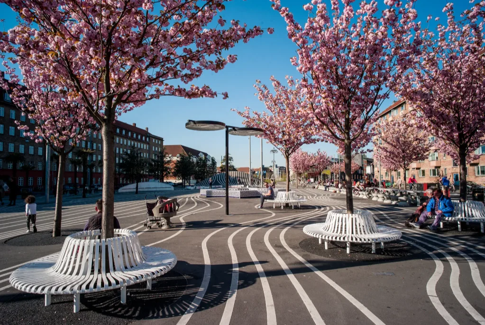
코펜하겐시는 다양한 분야의 전문가들과 협력(Co-Creation)하여 주민들의 아이디어를 구체적인 설계에 반영하였다. 건축회사 BIG(Bjarke Ingels Group), 조경회사 TOPOTEK1, 예술가 그룹 SUPERFLEX, 도시 사회학자, 인류학자 등 다양한 전문가들이 함께 참여하였다. 또한, 커뮤니티 디자이너, 공공 예술가, 도시 계획 전문가 등이 함께 모여 다문화적 특성과 지역 사회의 요구를 반영한 디자인을 구체화하였다.
그림 2 Superkilen Urban Park (c) Bjarke Ingels Group
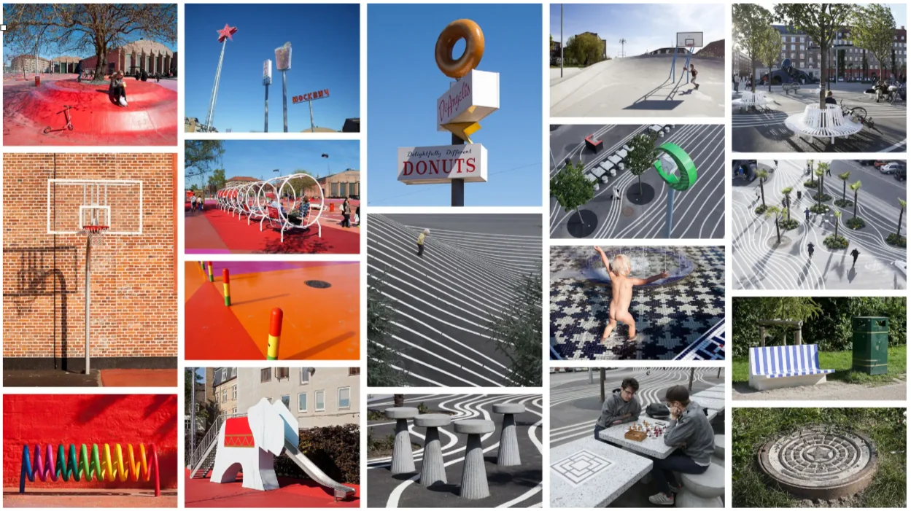
이 프로젝트는 주민과 전문가가 함께 공공 공간을 공동 설계(Co-Design)한 모범 사례로, 전문성과 지역성이 결합된 참여형 거버넌스 모델을 구현하였다.
수퍼킬렌 프로젝트는 다문화 지역의 갈등을 해소하고 주민들의 요구를 반영해 지역 공동체를 활성화한 모범적인 도시 재생 사례이다. 주민들의 참여와 전문가들의 협력(Co-Design)을 통해 단순한 공원이 아닌, 지역의 문화와 정체성을 담은 공공 공간을 창출하였다.
이 프로젝트는 ‘참여형 거버넌스’와 ‘공공 디자인’이 결합된 도시 재생의 성공 모델로, 세계적인 도시들이 참고하는 협력 기반 도시 계획 사례로 평가받고 있다
그림 3 Superkilen Urban Park (c) Bjarke Ingels Group
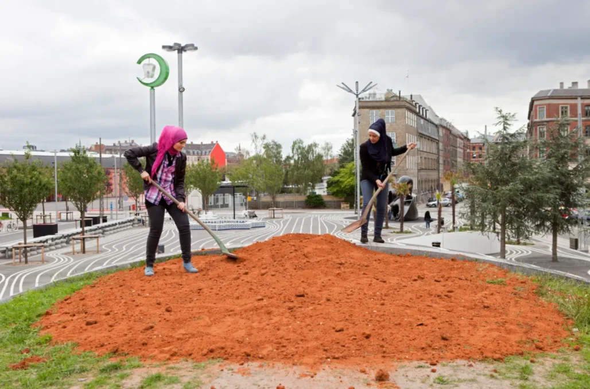
2. 캠퍼스 마티우스 파크(Campus Martius Park) - NPO협력으로 만드는 공공공간
그림 4 Campus Martius Park © Downtown Detroit Partnership
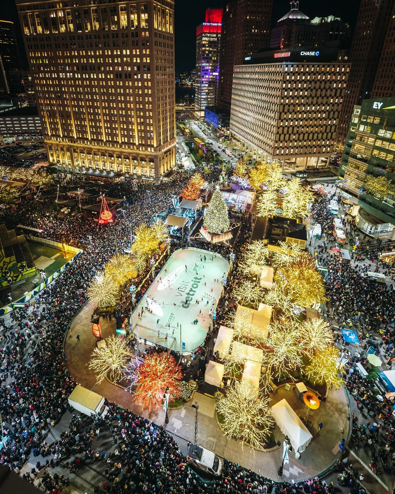
미국 디트로이트 다운타운 중심부에 있는 캠퍼스 마르티우스 공원(Campus Martius Park)은 디트로이트의 기준 원점인 공간에 조성되어 있는데 공원의 명칭은 과거 군사 퍼레이드장으로 사용되었던 데서 유래되었다. 1999년 디트로이트 시장 데니스 아처와 NPO Detroit 300 Conservancy은 공원을 활성화하기 위한 TF를 구성하고 디자인을 진행해 2004년 11월 19일에 개장했으며, 오늘날 캠퍼스 마르티우스 공원에는 우드워드 분수, 공공미술품, 아이스 스케이트장, "도시 해변", 봄과 여름에는 라이브 엔터테인먼트를 위한 무대가 있는 녹지 공간이 있다.
캠퍼스 마르티우스 공원은 활동, 휴식, 사회적 상호 작용을 위한 훌륭한 공공 센터의 사회적, 경제적 혁신 효과를 보여준 Urban Land Institute의 Urban Open Space Award의 첫 번째 수상자로 선정되었다.
그림 5 Campus Martius Park © Downtown Detroit Partnership
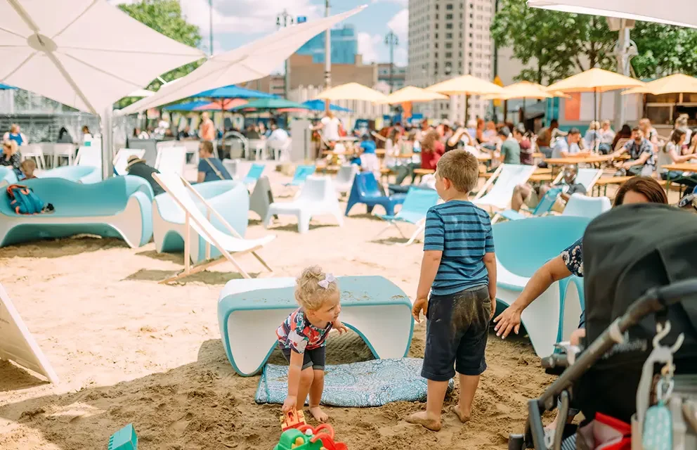
캠퍼스 마르티우스 공원은 매년 45만 명 이상의 사람들이 도심 지역으로 모여드는 연례행사인 ‘모타운 윈터 블라스트’의 장소이며, 추수감사절 전 월요일에 열리는 연례 크리스마스 트리 점등 축하 행사의 명소로 알려져 있다. 시즌이 되면 수천 명의 사람이 크리스마스 음악을 듣고 도시의 크리스마스트리와 기타 장식의 점등까지 카운트다운을 하며 홀리데이 시즌의 시작을 알리는 함께하는 공공장소의 역할을 한다.
그림 6 Campus Martius Park © Downtown Detroit Partnership
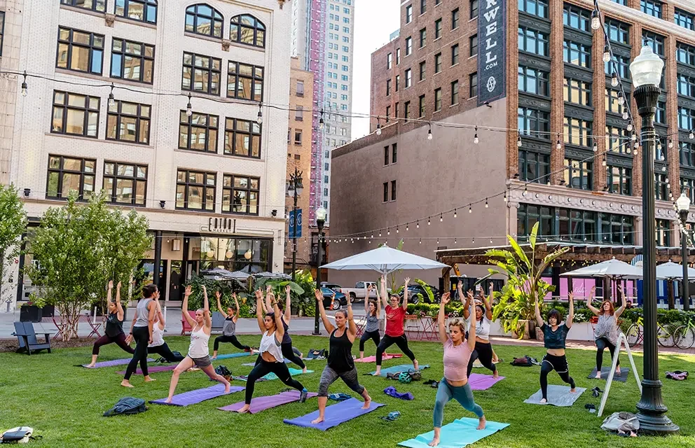
비영리 Detroit 300 Conservancy와 다운타운 디트로이트 파트너십(Downtown Detroit Partnership) 및 공공 공간 프로젝트(Project for Public Spaces)와 같은 비영리 단체의 협력으로 만들어진 디트로이트 300주년 비전을 담은 이 공공공간은 이제는 디트로이트의 명소가 된 교통섬 리:디자인 프로젝트이다. 캠퍼스 마티우스 파크(Campus Martius Park)는 공공장소 디자인의 국제적인 호평을 받으며 USA Today가 선정한 2021년 최고의 공공 광장 10곳에 선정되었는데 민간과 함께 협력하는 공공 공간 디자인, 관리, 운영, 장소 조성 및 프로그래밍으로 도시디자인 분야에서 수많은 상을 수상하고 있다.
그림 7 Campus Martius Park © Downtown Detroit Partnership
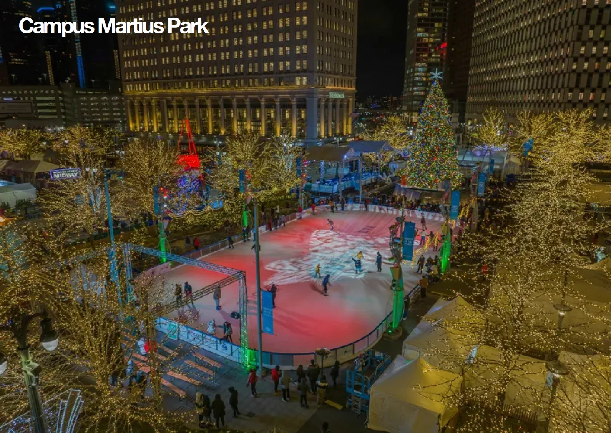
3. 이든 프로젝트 (Eden Project)-지역 유휴자산, 주민참여를 활용한 새로운 가치 창출
그림 8 Eden Project © The Eden Trust
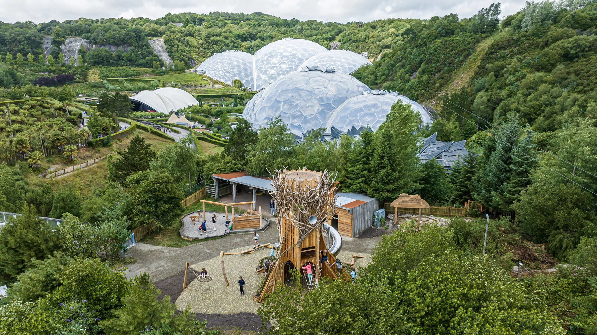
이든 프로젝트(Eden Project)는 영국 콘월의 폐석 채취장을 세계적인 생태관광지로 재생한 사례로, 거버넌스(정부, 기업, 지역 주민의 협력)를 통해 환경 보전과 지역 경제 활성화를 동시에 이룬 도시 재생 프로젝트이다.
이든 프로젝트는 영국 정부와 유럽연합(EU)의 지원금, 로이드 은행(Lloyds Bank) 등 민간 기업의 후원, 지역 주민의 참여로 추진되었으며, 환경운동가 팀 스미트(Tim Smit)가 기획하고 건축가 니콜라스 그림쇼(Nicholas Grimshaw)가 설계했다. 특히, 기획 단계에서부터 지역 주민들이 참여해 지역의 필요와 의견을 반영한 것이 큰 특징이다.
프로젝트의 핵심 시설은 세계 최대 돔형 온실인 ‘바이옴(Biome)’으로, 열대우림과 지중해 기후대의 생태계를 재현해 환경 보호와 교육의 가치를 동시에 담았다. 또한, 교육센터와 야외 정원에서는 환경 체험 프로그램과 다양한 커뮤니티 행사가 열리며 지역 주민들이 직접 행사 운영에 참여한다.
그림 9 Eden Project © The Eden Trust
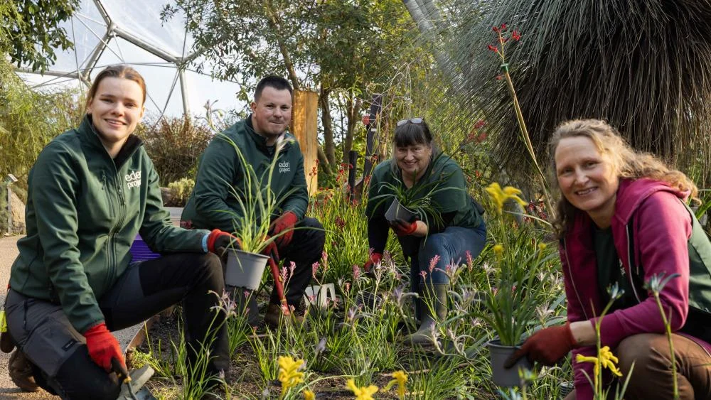
이든 프로젝트(Eden Project)는 거버넌스를 통해 경제적, 환경적, 사회적 성과를 모두 거두었다. 연간 100만 명 이상의 방문객을 유치하며 지역 경제에 연간 약 1억 파운드(약 1,700억 원)의 경제 효과를 창출했고, 3,000개 이상의 일자리를 제공해 지역 주민의 생활을 안정시켰다. 환경적으로는 폐허였던 채석장을 생태 명소로 탈바꿈시켰으며, 교육 프로그램을 통해 방문객들에게 환경 보호의 중요성을 알렸다.
그림 10 Eden Project © The Eden Trust
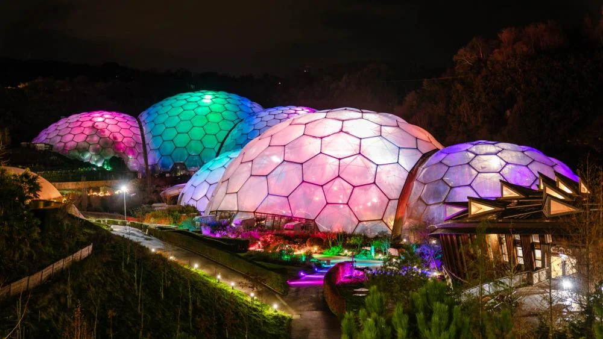
특히, 이든 프로젝트는 정부, 기업, 주민이 함께 참여하는 거버넌스 모델의 성공 사례로 평가받는다. 정부는 정책과 자금을 지원하고, 기업은 기술과 자원을 제공하며, 주민들은 운영과 행사 참여를 통해 공동체의 일원으로서 적극적으로 이바지했다. 이러한 협력 구조는 단순한 도시 재생을 넘어, 지속 가능한 생태문화 공간을 만들어냈다.
그림 11 Eden Project © The Eden Trust
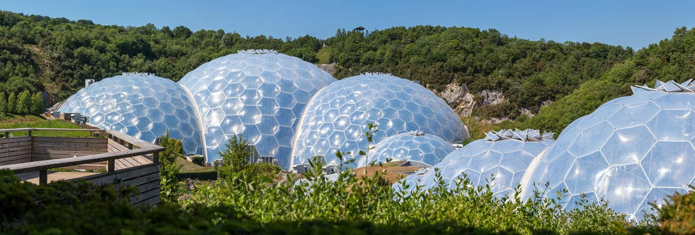
4. Placemaking Week Europe – 협력으로 공공장소를 만드는 유럽 네트워크
Placemaking Europe는 공간 디자인 분야의 실무자, 학자, 지역 사회 지도자, 민간기업, 이해관계자, 정책 입안자를 연결하여 공공장소를 만드는 유럽 네트워크이다.
장소만들기(Placemaking)는 물리적 시설물이나 건물이 아닌 공간을 사용하는 사람에 초점을 맞춘 도시 공공디자인 접근 방식이다. 장소만들기의 결과는 기능적일 뿐만 아니라 그곳에서 살고, 일하고, 노는 사람들에게 아름답고 의미 있는 장소를 제공한다. 즉, 장소만들기는 지역 사회와 이해관계자, 사용자들이 공간(Space)을 장소(Place)로 바꾸는 과정인데 장소만들기(Placemaking)과정에는 종종 지역 사회 구성원, 지역 공무원, 사업주, 도시 계획자를 포함한 다양한 이해 관계자 간의 협력이 포함된다.
그림 12 Campus Martius Park © Placemaking Week Europe
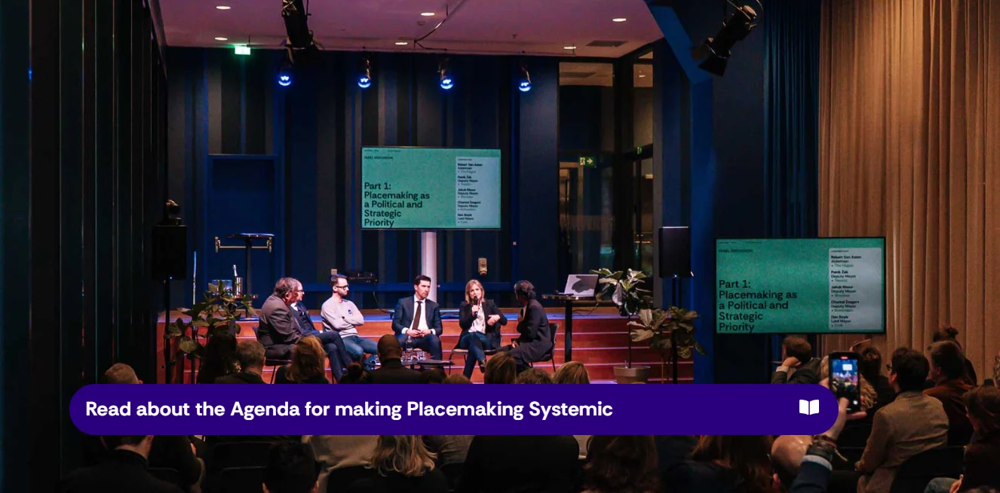
장소만들기(Placemaking)는 참여 공동체의 구체적인 요구와 목표에 따라 다양한 형태와 프로그램을 만들어 낼 수 있는데 공공 예술 설치물 만들기, 공원이나 광장에 벤치나 조명 등의 추가와 같은 장소의 개선과 운동장, 콘서트, 벼룩시장, 축제와 같은 프로그램 등이 있다.
궁극적으로, 장소만들기(Placemaking)의 목표는 기능적일 뿐만 아니라 커뮤니티 수요와 사회적 연결을 촉진하는 공공공간을 만드는 것이다. 사람들이 시간을 보내고 싶어 하는 장소를 협력을 통해 만들어냄으로써, 장소만들기는 도시 공공공간의 질을 개선하고 구성원들 사이에 더 강한 공동체 의식과 연결감을 만드는 데 큰 역할을 할 수 있다.
그림 13 Placemaking for Citizen-led Missions in SE Europe © Placemaking Week Europe
https://https://placemaking-europe.eu
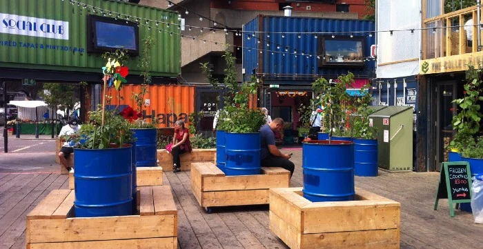
장소만들기(Placemaking)를 운영하는 Placemaking Europe는 NPO의 조직형태를 가지고 있는 데 참여와 협력을 기반으로 공공장소에 대한 디자인과 콘텐츠를 개발하고 공유하고, 도구 설계 및 테스트에 기여, 아이디어를 교환할 수 있는 토대를 마련하고 등 더 나은 공공 공간 디자인 전략과 정책을 지원한다.
Placemaking Europe은 그들의 목표를 ‘우리가 사는 공간을 우리가 사랑하는 장소로 만들기 위해 공공공간을 중심으로 가치, 열정, 행동을 결합하여 번영하고 공평하며 지속 가능한 세상을 만든다’라고 설정하고 있다.
그림 14 InclusiveCity © Placemaking Week Europe
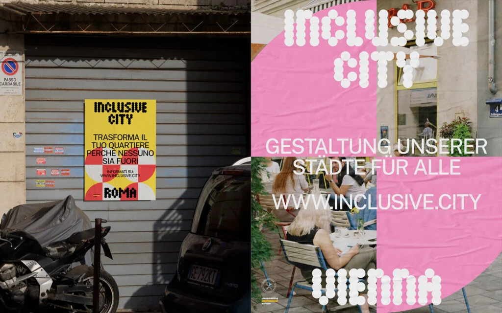
Placemaking Europe 2022는 더 나은 공공 장소와 사람 중심 도시를 만들기 위해 함께 서로 다른 분야의 지식을 통합하여 서로의 통찰력을 공유하여 장소 만들기 솔루션을 발견하고 장소 만들기 및 Tactical Urbanism의 실제 응용 프로그램을 통해 지속적인 유산을 남기고 공공 공간의 혁신 프로세스의 플랫폼 제공을 목표로 스페인 Pontevedra에서 개최되었다.
유럽 전역을 비롯한 전 세계에서 온 약 400명 이상의 Place maker들이 장소만들기 솔루션을 발견하고 실제 응용 실현과 실험을 통해 지속적인 실증을 남기고 협력을 통한 공공공간의 모델을 보여주었다.
그림 15 Placemaking Week-Pontevedra © Placemaking Week Europe
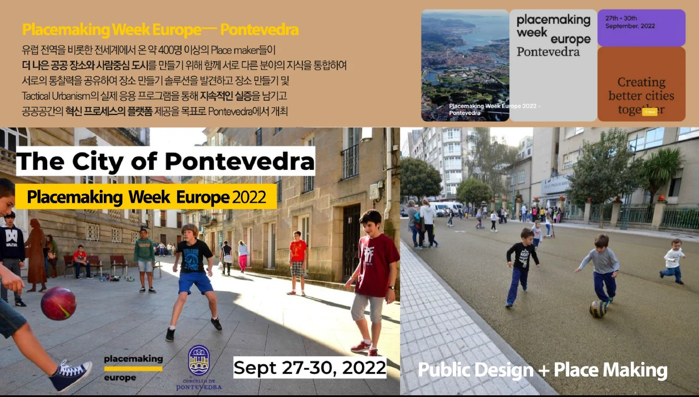
5. Vision Zero 교통안전 프로젝트-사회 문제를 사람을 중심으로 해결
Vision Zero(비전 제로)는 교통사고로 인한 사망자와 중상자를 ‘제로(0)’로 만들겠다는 목표를 가진 글로벌 교통안전 프로젝트이다. 이 프로젝트는 1997년 스웨덴 정부가 처음 시행했으며, 이후 전 세계 여러 국가와 도시들이 도입해 교통사고 감소에 큰 성과를 거두었다. Vision Zero는 단순한 교통법규 강화가 아닌, ‘인간 중심의 교통 시스템’ 설계라는 근본적인 패러다임 전환을 핵심 원칙으로 삼고 있다.
https://visionzeronetwork.org/about/what-is-vision-zero/
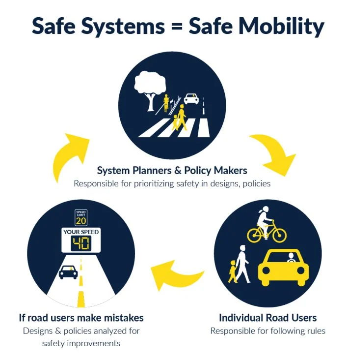
Vision Zero는 ‘거버넌스와 시민 참여’(Governance & Public Engagement)가 핵심이었다. Vision Zero는 정부, 지방자치단체, 기업, 시민단체가 함께 참여하는 협력 체계 속에서 추진되었다. 정부는 정책 수립과 인프라 투자를 맡았고, 기업은 첨단 안전 기술을 개발했으며, 시민사회는 교통안전 캠페인과 교육 프로그램을 통해 교통안전에 대한 인식을 높였다.
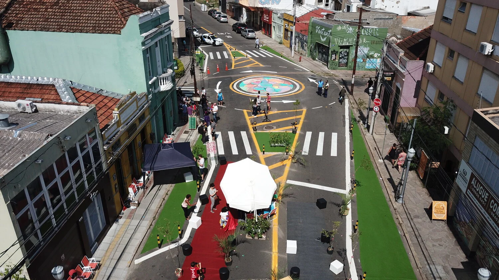
이러한 노력의 결과, 스웨덴은 Vision Zero 시행 이후 교통사고 사망자 수를 20년 만에 50% 이상 감소시켰으며, 특히 어린이 교통사고 사망률은 90% 이상 감소하는 성과를 거두었다.
Vision Zero는 스웨덴을 넘어 전 세계 여러 도시로 확산되며 각국의 교통안전 정책에 큰 영향을 미쳤다. 미국 뉴욕은 2014년 Vision Zero를 도입해 횡단보도 사고 사망자를 45% 감소시켰고, 제한속도를 40km/h로 하향 조정했다. 영국 런던은 2030년까지 교통사고 사망자 ‘제로’를 목표로, 자전거 및 보행자 중심의 도로 재설계를 추진 중이다. 한국 서울은 2016년부터 ‘서울형 비전제로’를 시행하며 스쿨존 내 교통안전을 강화해 보행자 교통사고 사망자를 5년간 약 40% 감소시켰다.
https://visionzeronetwork.org/european-cities-lead-the-way-toward-vision-zero/
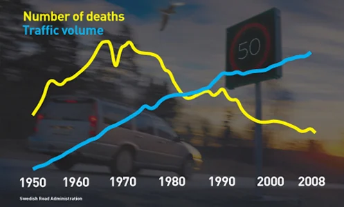
Vision Zero는 단순한 교통안전 정책을 넘어, 정부, 기업, 지역 사회가 함께 참여하는 ‘거버넌스 모델’의 대표적인 성공 사례로 평가받는다. 정부는 교통법 강화와 인프라 구축을 주도했고, 기업은 자율주행 및 안전 기술 개발을 통해 혁신을 이끌었으며, 시민사회는 교통안전 캠페인과 커뮤니티 참여로 정책의 지속성과 공공성을 확보했다.
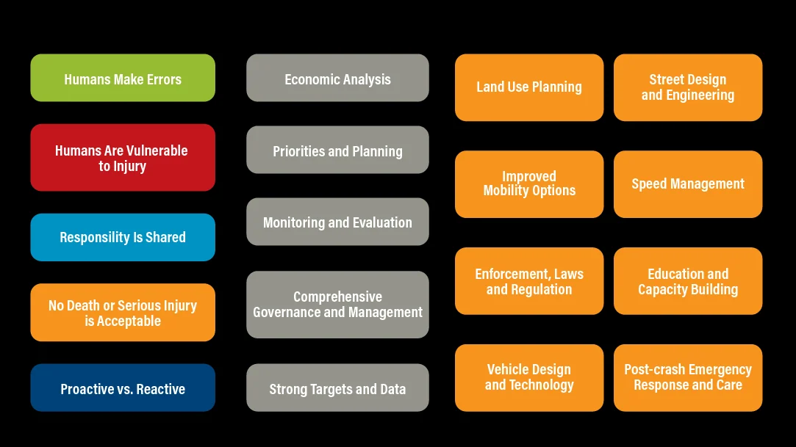
결론적으로, Vision Zero는 ‘생명 존중’이라는 가치를 중심에 두고 안전, 협력, 지속 가능성을 실현한 도시 교통 안전 혁신 사례이다. 이 프로젝트는 단순한 목표가 아닌, 사회 전체가 공유할 ‘비전(vision)’이며, 앞으로의 도시가 지향해야 할 인간 중심적이고 지속 가능한 교통안전 모델로 남을 것이다.
Ⅲ. 디자인을 통한 협력 가치 실현
공공디자인에 관한 국민의 의견을 적극 수렴하며, 의사결정 과정에 국민들이 참여할 수 있는 다양한 방법을 마련한다.
-공공디자인 진흥에 관한 법률 제10조 4항
공공디자인은 단순히 공간을 아름답게 조성하는 것을 넘어, 공동체의 가치와 문화를 담아내며 사회적 가치를 창출하는 중요한 수단이다.
특히, 현대 사회는 기후 변화, 지역 불평등, 교통 문제, 공동체 붕괴 등 복합적이고 다층적인 문제에 직면해 있다. 이러한 문제들은 특정 기관이나 개인의 노력만으로는 해결할 수 없기 때문에, 다양한 주체가 함께 참여하는 협력적 접근이 필수적이다. 공공디자인은 이러한 문제 해결을 위한 연결고리로, 지역 주민, 공공기관, 기업 등 여러 주체가 함께 참여해 만들어가는 협력 기반의 거버넌스를 통해 더욱 풍부한 가치를 창출할 수 있다. 주민 참여를 통해 지역의 목소리를 담아내고, 기업의 ESG 활동을 접목해 환경적·사회적 가치를 반영하며, 공공기관이 정책적 지원과 실행을 주도하는 등 협력은 공공디자인의 힘을 배가시킨다.
지속 가능한 발전을 위해서는 공공디자인이 환경적 관점을 포함해 ESG(환경, 사회, 거버넌스) 가치를 반영하는 것이 중요하다. 자원 순환을 촉진하는 업사이클링 프로젝트, 자연 친화적 공간을 조성하는 바이오필릭 디자인, 대기 질 개선을 위한 공공녹지 확대 등은 공공디자인이 환경 문제 해결에 기여할 수 있는 실질적인 방법들이다. 이를 통해 공공디자인은 단순한 시각적 아름다움을 넘어, 환경 보호와 자원 재생이라는 지속 가능한 가치를 실현한다.
결국, 공공디자인은 도시와 공동체의 문제를 해결하는 ‘사회적 도구’이자 ‘미래 전략’이다. 공공디자인은 시대가 요구하는 지속 가능성과 사회적 책임을 담아내며, 협력과 참여를 통해 더 나은 미래를 만들어가는 핵심적인 공공 자산으로 자리할 것이다. 이 과정에서 공공디자인은 단순한 장식이나 시설물이 아닌, 사람을 위한 디자인, 사회적 가치를 구현하는 디자인, 그리고 모두가 함께 만들어가는 디자인으로 발전해 나가야 한다.